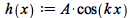
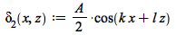
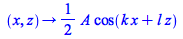
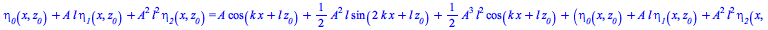
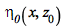
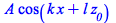
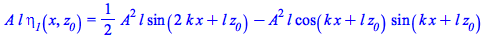
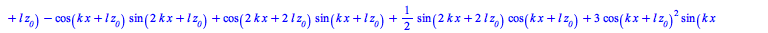
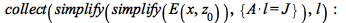

This document checks the algebra involved in my asymptotic solution to Long's Hydrostatic Model:
| (1) |
subject to the nonlinear bottom boundary condition
| (2) |
and the Sommerfeld radiation condition appropriate for infinite depth (that is, all waves radiate away from the bottom).
For the sake of simplicity, this solution assumes a single component of bathymetry

| (3) |
I expand δ in powers of the small parameter
| (4) |
such that
| (5) |
To generate solutions that satisfy the bottom boundary condition, we will need to taylor expand δ around z=0
| (6) |
This is a bit of a mess. Let's begin with the zeroth order solution (and neglect to write O() in what follows)
| (7) |
And the zeroth order boundary condition
| (8) |
Upon appeal to Long's Model, we find the "linear" solution to the lee wave
| (9) |
Now we'll go for the 1st order solution
| (10) |
And the 1st order taylor expansion of the bottom boundary condition
| (11) |
Rearranging and recognizing that d/dz is proportional to l, we have
| (12) |
Now recall the trig identity,
| (13) |
And thus we have
| (14) |
And upon appeal to Long's Model, we find
| (15) |
Now let's go for the 2nd order accurate solution
| (16) |
Plug in what we know to the 2nd order accurate taylor expansion of the bottom boundary condition:
| (17) |
Again, rearranging and recognizing that d/dz is proportional to l, we have
| (18) |
Hence,
| (19) |
And on appeal to Long's Model, we have

|  | (20) |
All together now, our second order accurate solution to Long's Model reads as =
| (21) |
Now we must face the unfortunate truth that we've been implicitly evaluating at a z-level that depends on x. That is, δ(x,z) is evaluated at the posiotion of the displaced streamline, z, rather than at the position of the streamline far upstream, which I will call z0 (subscript 0 in math mode). More rigorously, we can define an analog of δ that is evaluated at z0:
As a first step toward the solution in (x,z0) coordinates, we expand η in powers of J, going again out to 2nd order accuracy::

| (22) |
Now we can taylor expand δ around z0:

|  |
(23) |
What a mess! Let's break this down in orders of J. The zeroth order solution for η comes quickly by neglecting all terms of order J or higher:
| (24) |

|  | (25) |
Now for the first order solution, expand η only to first order and plug that into the first order taylor expansion of δ around z0:
| (26) |
| (27) |
Retaining only terms of 1st order in l, this reads
|  | (28) |
Now again recall the trig identity
| (29) |
And we have
| (30) |
Now we are in a position to go for the 2nd order accurate solution without too much headache.
| (31) |

| (32) |
Not too much headache?! Well... consider only those terms of 2nd order, and this is more manageable. First, though, let's take a look at those 1st order in l terms:
| (33) |
Maple could not see it before... but they equal zero. There is no mistake so far. Phew!
Okay, now for the 2nd order in l terms
| (34) |
Cleaning this up a little, we have

| (35) |
And thus all together, plugging our solutions into
| (36) |
η looks like: =
| (37) |
Now, to relate η to other fields, we'll create the stream function
| (38) |
And the horizontal velocity
| (39) |
Now assign the expression arrived at by typing u(x,z)) to u(x,z0) so that we can ask for u(x,0) without getting the error of trying to evalueate a derivative of psi in z0 when it is no longer a function of z0...
| (40) |
And the vertical velocity
| (41) |

| (42) |
And using Long's hydrostatic equation, the u momentum equation, and the expressions of u and w in terms of η, we can derive the pressure as
| (43) |
 |
(44) |
| (45) |
Now that we have pressure, let's find the form drag on the topography (this is the negative of the forcing by the topography on the flow). We will integrate over one wavelength. Thus this is the formdrag per unit spanwise per wavelength (force per length).
| (46) |
Reassign J so that I can swap it in for A*l:
| (47) |
| (48) |
Note that the higher order terms reduce the form drag! Admittedly, the 5th order term might not be worth much, since our expansion only went out to 2nd order, and thus the accuracy in a derivative quantity such as pressure is only out to 3rd order.
Now let's go for energy flux:
| (49) |

(this is an enormous polynomial... not worth displaying)
And, just as we did with form drag, let's find the flux of energy away from the bottom boundary per unit spanwise per wavelength. Here is at all levels in z0. Note that it is not constant in z0!
| (50) |
| (51) |
And here is the enerfy flux at z0=0:
| (52) |
| (53) |
Note first that this is the form drag multiplied by U, jsut as in linear theory. Furthermore, note that just as with the form drag, the higher order terms reduce the energy flux. This might begin to explain the fall off in energy flux what we saw in the SUNTANS runs, even in the small J cases. That would be cool.
However, in SUNTANS we saw a convex curvature to the decay with J, while this describes a concave curvature.
Still to do: stability! Find where d/dz0(η)=1 and where Ri<1/4. To do that, I will need to find an N(x,z0).